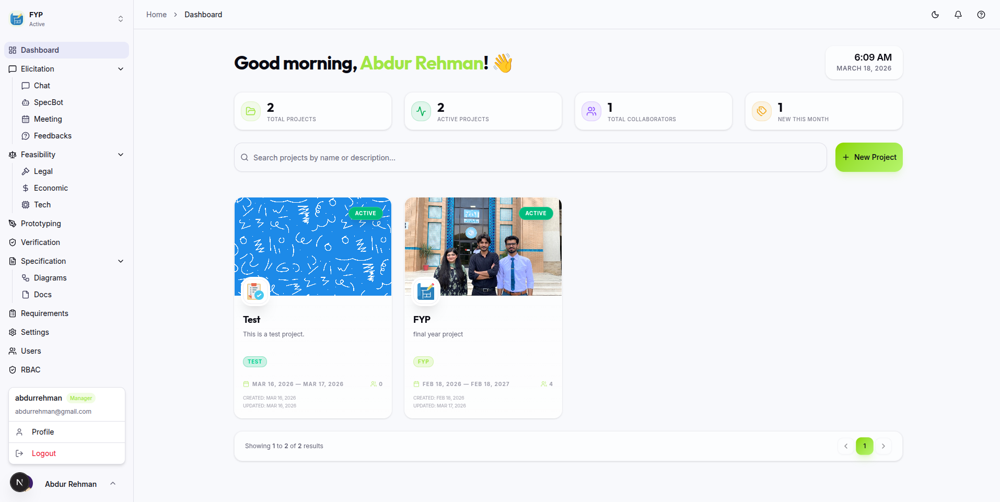

AI-Powered Platform
Transform Ideas into
Clear Specifications
Specora streamlines requirements gathering with AI. Collaborate with stakeholders, generate precise specs, and bridge the gap between vision and development.

10x Faster
Time to Specification
99.2%
AI Consistency
85%
Less Rework
60%
Faster Discovery
Core Modules & Features
Experience the complete requirements lifecycle with purpose-built modules.